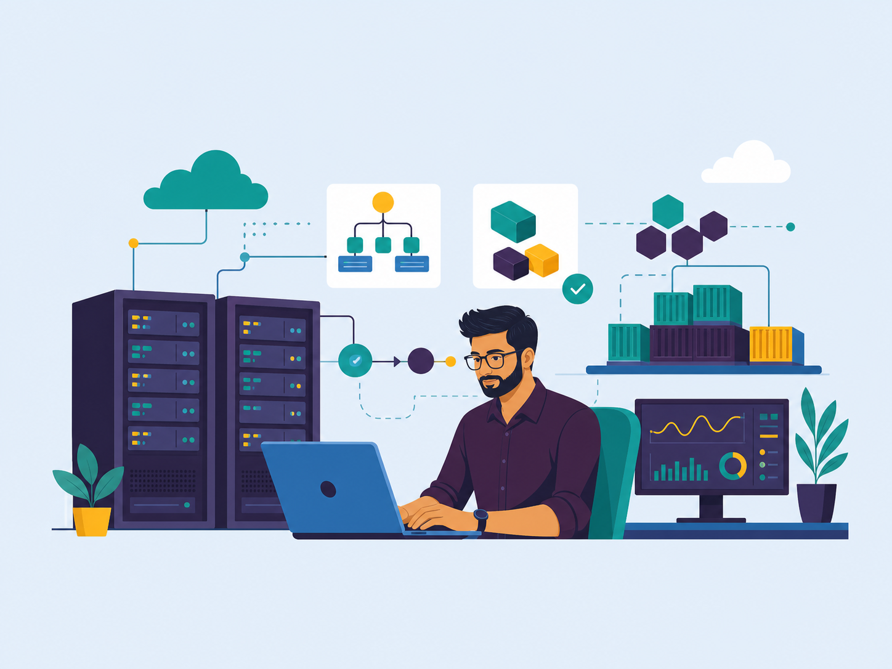

Automation first
If it repeats, it belongs in code, pipeline templates, scripts, or reusable Terraform modules.
Senior DevOps Engineer
Azure Cloud, Kubernetes, Terraform, CI/CD, and DevOps automation for reliable, secure, production-grade platforms.

I am a Senior DevOps Engineer with 7 years of IT experience, including 4+ years focused on DevOps and cloud automation. I design and support CI/CD pipelines, Azure infrastructure, Kubernetes deployments, and secure release patterns.
I currently work at American Express. Earlier roles at HCLTech and Mphasis built my background across enterprise DevOps delivery and Java engineering.
My strongest work sits around Azure DevOps, GitHub Actions, Jenkins, Docker, AKS, Helm, Terraform, ARM templates, Bicep, Key Vault, Managed Identity, Azure Monitor, Prometheus, and Grafana.
If it repeats, it belongs in code, pipeline templates, scripts, or reusable Terraform modules.
Secrets stay in Key Vault, identities are managed, and access follows RBAC instead of shortcuts.
Deployments are not finished until metrics, logs, alerts, and rollback paths are clear.
A DevOps flow shaped around the resume projects: code quality, containers, AKS, Key Vault, and monitoring.
GitHub, Azure Repos, PR validation
Maven, Gradle, .NET Core, Docker
Unit tests, SonarQube gates
App Service, AKS, Helm, slots
Azure Monitor, Grafana, App Insights
Grouped the way recruiters scan: platform, orchestration, IaC, CI/CD, monitoring, and identity.
Microsoft Azure, App Service, Azure Functions, VM, Storage, Networking, Monitor, Key Vault, Entra ID.
Evidence: enterprise Azure delivery, administration, identity, networking, and monitoring.
AKS clusters, Helm charts, RBAC, Azure AD integration, ACR, rolling updates, microservices hosting.
Evidence: AKS migrations, Helm releases, ACR integration, probes, scaling, and RBAC.
Terraform, ARM templates, Bicep, Ansible, modular infrastructure, remote-state ready design.
Evidence: reusable Azure infrastructure patterns across Terraform, ARM, and Bicep.
Azure DevOps YAML and classic pipelines, GitHub Actions, Jenkins, quality gates, release approvals.
Evidence: automated build, test, scan, approval, deployment, and rollback workflows.
Azure Monitor, Application Insights, Prometheus, Grafana, Datadog, OpsRamp, production dashboards.
Evidence: platform dashboards, alert rules, application telemetry, and production handoff.
PowerShell, Bash, Azure CLI, Java, Spring Boot, REST APIs, SQL, HTML, CSS, JavaScript, Python.
Evidence: release automation, operational scripts, APIs, and earlier Java application delivery.
These summaries are sanitized from professional experience. Client names, source code, credentials, and environment-specific values are intentionally excluded.
Built automated build, test, code coverage, staging slot, production deployment, and monitoring flow for a .NET Core web app.
Migrated microservices to AKS, provisioned infrastructure with Terraform and ARM, deployed with Helm, and added Grafana observability.
Automated Azure networking, identity, secrets, API Management, Azure Functions, and monitoring patterns for enterprise services.
Packaged Java services, ran quality checks, built Docker images, pushed to ACR, and released to AKS using Helm charts.
Resume-reported outcome: release time reduced from hours to under 15 minutes using automated pipelines, controlled rollout, health checks, and rollback-ready deployment patterns.
Designed event-driven Azure Functions, REST APIs, Service Bus integration, storage patterns, and secure telemetry.
A sanitized implementation story covering architecture, release challenges, security choices, repository evidence, and measurable outcomes.

Evidence basis: resume project history and portfolio repository documentation. This is not presented as a public copy of confidential client infrastructure.
Infrastructure and release configuration moved into reviewed Terraform and Helm definitions instead of manual portal changes.
Managed identities and RBAC reduced long-lived secrets, while Key Vault remained the controlled source for application secrets.
The resume reports that automated pipelines reduced release turnaround to under 15 minutes and supported zero-downtime patterns.
Cloud delivery, DevOps automation, and earlier Java enterprise engineering experience.
Current role
Current employer verified from the public LinkedIn profile. Client, platform, and project details are kept high-level to respect confidentiality.
May 2022 - July 2025
Built Azure DevOps pipelines, AKS deployment automation, Key Vault integrations, Terraform infrastructure, and observability workflows for enterprise cloud workloads.
March 2018 - May 2022
Developed Java/J2EE, Spring Boot, Hibernate, REST and SOAP services, SQL-backed systems, and unit-tested business logic before moving deeper into DevOps.
Certifications listed from the resume, kept clean and verifiable.
Microsoft, August 2025
Microsoft, September 2025
Complete articles with implementation decisions, checks, failure modes, and production handoff guidance.
A complete path from Azure foundation and identity to Helm releases, health probes, rollback, and environment promotion.
Read the articleHow to connect platform, workload, and release signals into useful dashboards, alerts, and incident-ready runbooks.
Read the articleEach project proves one part of the same Azure delivery system, from infrastructure and release automation to security and production support.
A connected system for provisioning, building, securing, deploying, and operating cloud workloads.
ACR images move through Helm into AKS with namespaces, probes, scaling, RBAC, and Key Vault integration.
AKS topologySource changes pass through build, test, quality scan, image publishing, approval, and deployment.
Release flowReusable modules create networking, AKS, ACR, Key Vault, monitoring, tagging, and remote state.
Azure resource mapManaged Identity, RBAC, Key Vault, private networking, policy, and audit controls protect the platform.
Trust boundaryAzure Monitor, App Insights, Prometheus, Grafana, alerts, and runbooks close the delivery loop.
Telemetry pathProject summaries connect the tools used, implementation decisions, diagrams, and measurable results.
Portfolio proofTerraform creates the Azure foundation, while identity, networking, and secrets are built into the platform from the start.
CI/CD validates the application, publishes the container image, and deploys it to AKS through controlled release stages.
Monitoring, alerts, dashboards, and runbooks provide the feedback needed to keep releases healthy and improve reliability.
Reach out for Azure DevOps, AKS, Terraform, CI/CD automation, monitoring, or secure cloud platform work.